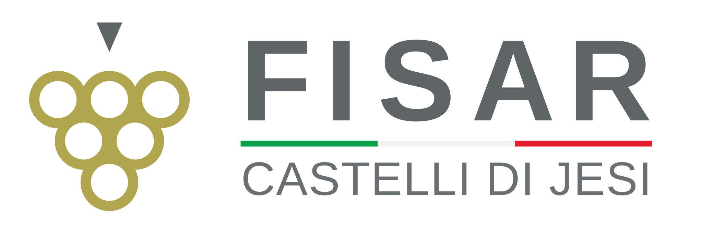

FISAR Delegazione Castelli di Jesi
Il vino come punto di partenza, le persone al centro.
Corsi per sommelier, degustazioni e incontri per conoscere il mondo del vino.

Il vino come punto di partenza, le persone al centro.
Corsi per sommelier, degustazioni e incontri per conoscere il mondo del vino.